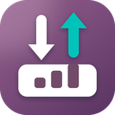

Odoo Import Export is installed
Import spreadsheets into any Odoo model, export to Excel or CSV, and chart your data, for Odoo 16 to 20.
- Open your Odoo and log inAny page will do; the Contacts app is a good start.
- Click the Odoo Import Export icon in the toolbar, or press Alt+Shift+I Don't see the icon? Click the puzzle piece next to the address bar and pin Odoo Import Export.
- Click “Try it with sample contacts” A guided run with 8 sample contacts and a few typical mistakes. Nothing is saved unless you click Import, and one click removes them afterwards.
Import
Columns matched by themselves, links looked up before anything is written, a check with Odoo, undo.
Export
Data or files to edit and import back; the list's search or the ticked records; Excel or CSV.
Analyze
Group by any field, compare periods, save the chart as an image, Excel or PDF.
Everything runs in your browser with your own Odoo login and access rights. Your data goes only to your Odoo server: no account, no tracking, no third-party service.